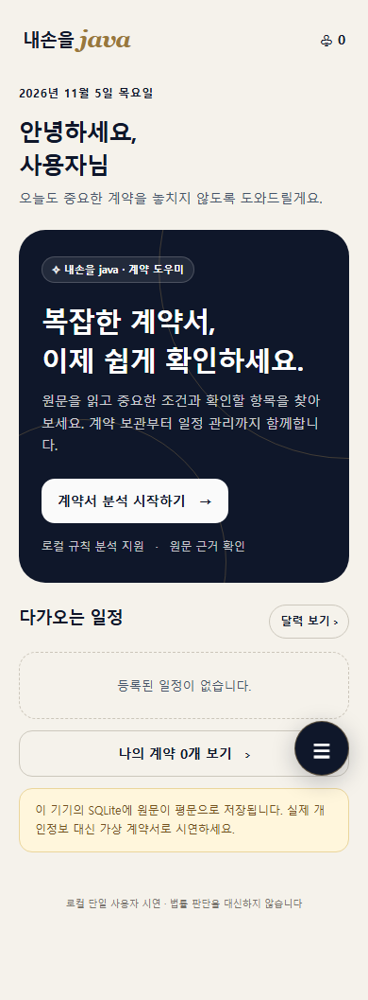
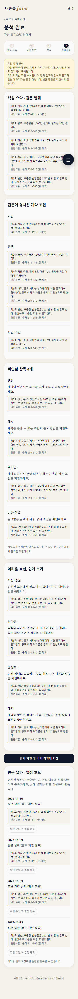

어려운 계약은 쉽게 이해하고,
중요한 날짜는 직접 확인해 관리하세요.
낯선 표현과 긴 조항을 읽는 부담, 서명 후 갱신·만료 일정을 따로 관리하는 불편을 줄이기 위한 계약 도우미입니다.
대상: 계약 경험이 적은 사회초년생과 청년층
기본은 키 없이 동작하는 규칙 모드. AI 설명은 서버 키를 설정한 경우 별도 모드로 표시합니다.
별도로 라벨링한 가상 문서 12개. 개발 예시와 파일을 분리하고 정답·실행 코드·실측 JSON을 제공합니다.
| 평가 항목 | 정밀도 | 재현율 | F1 |
|---|---|---|---|
| 날짜 추출 | 1.000 | 1.000 | 1.000 |
| 주의 항목 micro | 1.000 | 0.800 | 0.889 |
70 / 70
원문 인용·문자 범위 일치
소규모 합성 세트 결과이며 실제 계약 전체로 일반화할 수 없습니다. 키워드가 다른 표현을 놓치는 한계가 관측됐습니다. 인용 존재가 설명의 정확성을 보증하지 않습니다.


기존 프로토타입의 네이비·골드·아이보리와 모바일 구성을 유지했습니다.
실제 AI 계정 연결과 한국어 OCR 엔진 설치가 필요합니다. 현재 유료 API 호출과 한국어 인식 품질은 미검증입니다. 사람 평가·실사용자 만족도는 아직 측정하지 않았습니다.